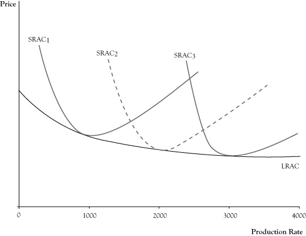

In the last chapter, we distinguished short-run demand from long-run demand to reflect the range of options for consumers. In the short run, consumers were limited in their choices by their current circumstances of lifestyles, consumption technologies, and understanding. A long-run time frame was of sufficient length that the consumer had the ability to alter her lifestyle and technology and to improve her understanding, so as to result in improved utility of consumption.
There is a similar dichotomy of short-run production decisions and long-run production decisions for businesses. In the short run, businesses are somewhat limited by their facilities, skill sets, and technology. In the long run, businesses have sufficient time to expand, contract, or modify facilities. Businesses can add employees, reduce employees, or retrain or redeploy employees. They can change technology and the equipment used to carry out their businesses.
The classification of short-run planning is more an indication of some temporary constraint on redefining the structure of a firm rather than a period of a specific length. In fact, there are varying degrees of short run. In a very brief period, say the coming week or month, there may be very little that most businesses can do. It will take at least that long to make changes in employees and they probably have contractual obligations to satisfy. Six months may be long enough to change employment structures and what supplies a firm uses, but the company is probably still limited to the facilities and technology they are using.
How long a period is needed until decisions are long term varies by the kind of organization or industry. A retail outlet might easily totally redefine itself in a matter of months, so for them any decisions going out a year or longer are effectively long-term decisions. For electricity power generators, it can take 20 years to plan, get approvals, and construct a new power generation facility, and their long-term period can be in terms of decades.
One important characteristic that distinguishes short-run productionA time frame that occurs soon enough that businesses, which are limited by their facilities, skill sets, and technology, cannot respond by changing their production capacity; a time frame in which there are fixed costs and variable costs. decisions and long-run production decisions is in the nature of costs. In the short run, there are fixed costs and variable costs. However, in the long run, since the firm has the flexibility to change anything about its operations (within the scope of what is technologically possible and they can afford), all costs in long-run productionA time frame that occurs far enough in the future that businesses have sufficient time to expand, contract, or otherwise modify their production capacity; a time frame during which all costs are variable. decisions can be regarded as variable costs.
Another important distinction between short-run production and long-run production is in the firm’s ability to alter its capacity. In a decidedly short-run time frame, the firm’s capacity or point of lowest average cost is effectively fixed. The firm may elect to operate either under or slightly over their capacity depending on the strength of market demand but cannot readily optimize production for that selected output level. In the long run, the firm is able to make decisions that alter its capacity point by resizing operations to where the firm expects to have the best stream of profits over time.
Because a business has the ability to redesign all of its operations to suit a targeted level of production, average cost curves for long-run planning are flatter than short-run average cost curves. If it appears that a low-volume operation would yield the best returns, the firm can be downsized to remove the cost of excess capacity and arrive at a lower average cost than would be achievable in the short run. By expanding its capacity, a firm would be able to perhaps even lower average cost, but certainly avoid the inefficiencies of being overcapacity, should higher production levels appear to be better.
One way to think of a long-run average cost curveA function for which each value reflects the lowest possible average cost of an operation resized to be optimal for that level of production. is that each point on the curve reflects the lowest possible average cost of an operation resized to be optimal for that level of production. For example, in Figure 4.2 "Graph of Long-Run Average Cost (LRAC) Function Shown as the Short-Run Average Cost (SRAC) at Capacity for Different Scales of Operation", the long-run average cost on curve LRAC at a production rate of 1000 units per period is the lowest cost, or cost at the capacity point, for a cost structure reflected by short-run average cost curve SRAC1. The long-run average cost at a production rate of 2000 units per production period is the lowest cost for average cost curve SRAC2 (which has a capacity of 2000). The long-run average cost at a production rate of 3000 units per production would be the average cost at capacity for SRAC3.
Like short-run average cost curves, long-run average cost curves trend downward at low target production rates, although the rate of decline in the long-run average cost curve is somewhat flatter due to the ability to readjust all factors of production. The typical reason for this declining long-run average cost curve at low production levels is because there are efficiencies in cost or production that can be exploited for modest increases in quantity. For example, for a business that is manufacturing major appliances or vehicles that require several assembly steps, in a larger operation it is possible to assign different assembly steps to different workers and, via this specialization, speed up the rate of production over what would be possible if the firm hired the same workers with each worker performing all assembly steps. As we pointed out in the previous chapter, customers who buy in large quantities can sometimes buy at a lower per unit price. Since most firms are buyers as well as sellers, and larger firms will buy in larger quantities, they can reduce the contribution of acquired parts and materials to the average cost.
Figure 4.2 Graph of Long-Run Average Cost (LRAC) Function Shown as the Short-Run Average Cost (SRAC) at Capacity for Different Scales of Operation
The ability to reduce long-run average cost due to increased efficiencies in production and cost will usually eventually subside. The production level at which the long-run average cost curve flattens out is called the minimum efficient scaleThe production level at which the long-run average cost curve flattens out.. (Since the business is able to adjust all factors of production in the long run, it can effectively rescale the entire operation, so the target production level is sometimes called the scaleThe target production level when a business is able to adjust all factors of production in the long run. of the business.) In competitive seller markets, the ability of a firm to achieve minimum efficient scale is crucial to its survival. If one firm is producing at minimum efficient scale and another firm is operating below minimum efficient scale, it is possible for the larger firm to push market prices below the cost of the smaller firm, while continuing to charge a price that exceeds its average cost. Facing the prospect of sustained losses, the smaller firm usually faces a choice between getting larger or dropping out of the market.
The increase in capacity needed to achieve minimum efficient scale varies by the type of business. A bicycle repair shop might achieve minimum efficient scale with a staff of four or five employees and be able to operate at an average cost that is no different than a shop of 40 to 50 repair persons. At the other extreme, electricity distribution services and telephone services that have very large fixed asset costs and low variable costs may see the long-run average cost curve decline even for large production levels and therefore would have a very high minimum efficient scale.
Most firms have a long-run average cost curve that declines and then flattens out; however, in some markets the long-run average cost may actually rise after some point. This phenomenon often indicates a limitation in some factors of production or a decline in quality in factors of production if the scale increases enough. For example, in agriculture some land is clearly better suited to certain crops than other land. In order to match the yield of the best acreage on land of lower quality, it may be necessary to spend more on fertilizer, water, or pest control, thereby increasing the average cost of production for all acreage used.
Businesses that are able to lower their average costs by increasing the scale of their operation are said to have economies of scaleA situation in which a business can lower its average costs by increasing the size of its operation.. Firms that will see their average costs increase if they further increase their scale will experience diseconomies of scaleA situation in which a business experiences an increase in average costs if it increases the size of its operation.. Businesses that have achieved at least their minimum efficient scale and would see the long-run average cost remain about the same with continued increases in scale may be described as having constant economies of scaleA situation in which a business that has achieved its least minimum efficient scale sees its long-run average cost remain about the same with continued increases in the size of its operation..
The impact of an increase of scale on production is sometimes interpreted in terms of “returns to scale.” The assessment of returns to scale is based on the response to the following question: If all factors of production (raw materials, labor, energy, equipment time, etc.) where increased by a set percentage (say all increased by 10%), would the percent increase in potential quantity of output created be greater, the same, or less than the percent increase in all factors of production? If potential output increases by a higher percent, operations are said to have increasing returns to scale. If output increases by the same percent, the operations show constant returns to scale. If the percent growth in outputs is less than the percent increase in inputs used, there are decreasing returns to scale.
Returns to scale are related to the concept of economies of scale, yet there is a subtle difference. The earlier example of gained productivity of labor specialization when the labor force is increased would contribute to increasing returns to scale. Often when there are increasing returns to scale there are economies of scale because the higher rate of growth in output translates to decrease in average cost per unit. However, economies of scale may occur even if there were constant returns to scale, such as if there were volume discounts for buying supplies in larger quantities. Economies of scale mean average cost decreases as the scale increases, whereas increasing returns to scale are restricted to the physical ratio between the increase in units of output relative to proportional increase in the number of inputs used.
Likewise, decreasing returns to scale often translate to diseconomies of scale. If increasing the acreage used for a particular crop by using less productive acreage results in a smaller increase in yield than increase in acreage, there are decreasing returns to scale. Unless the acreage costs less to use, there will be an increase in average cost per unit of crop output, indicating diseconomies of scale.